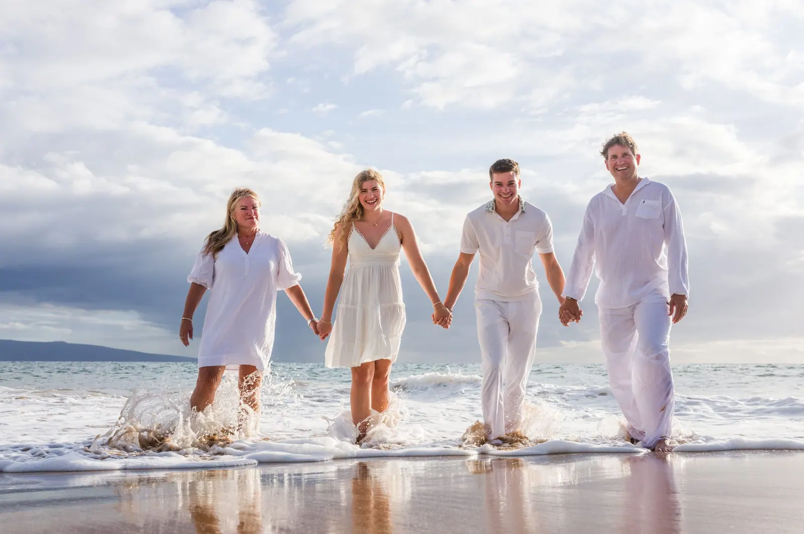
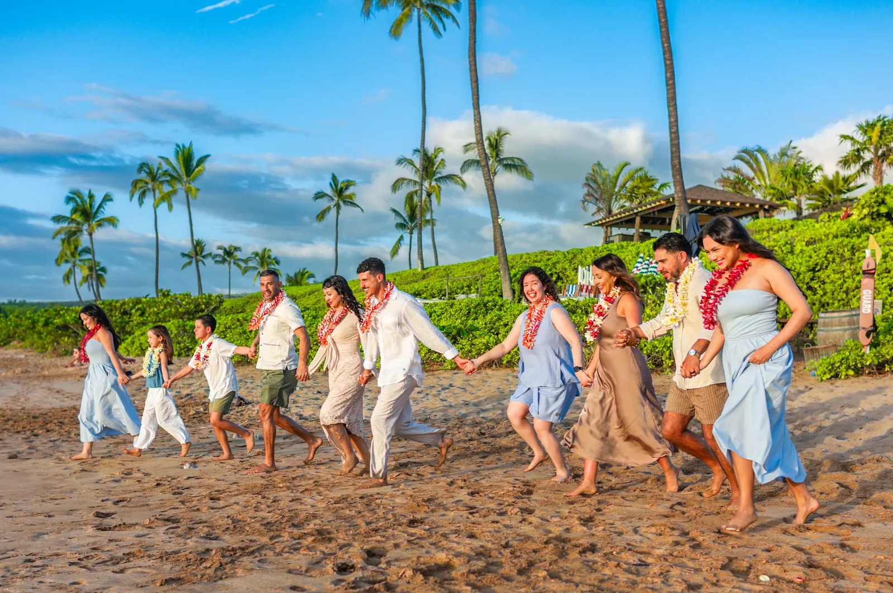
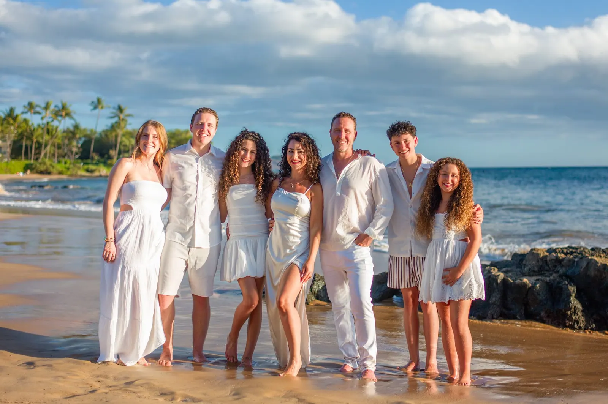
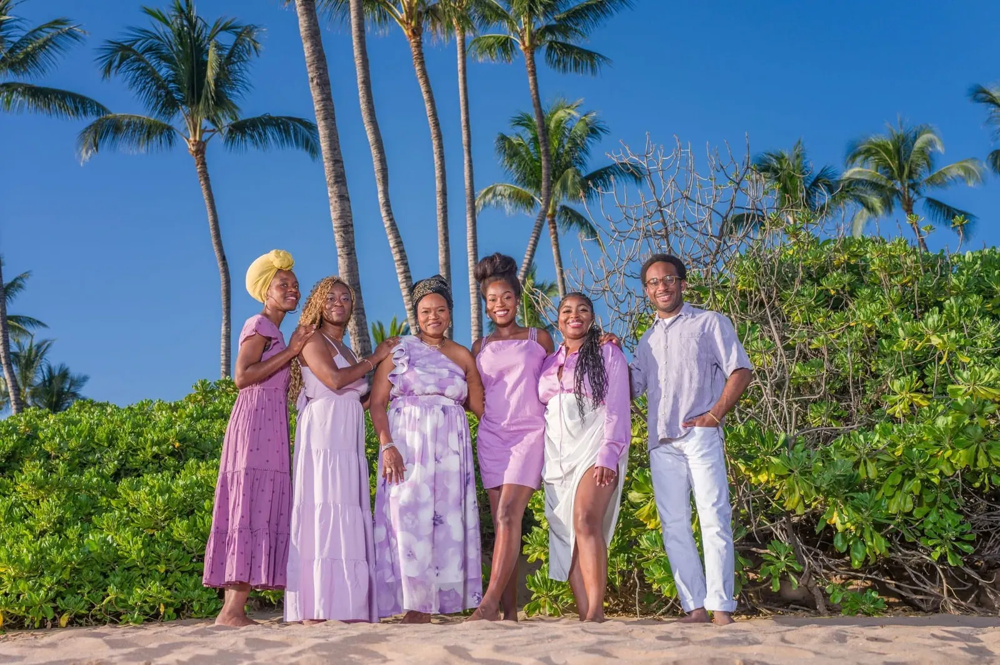
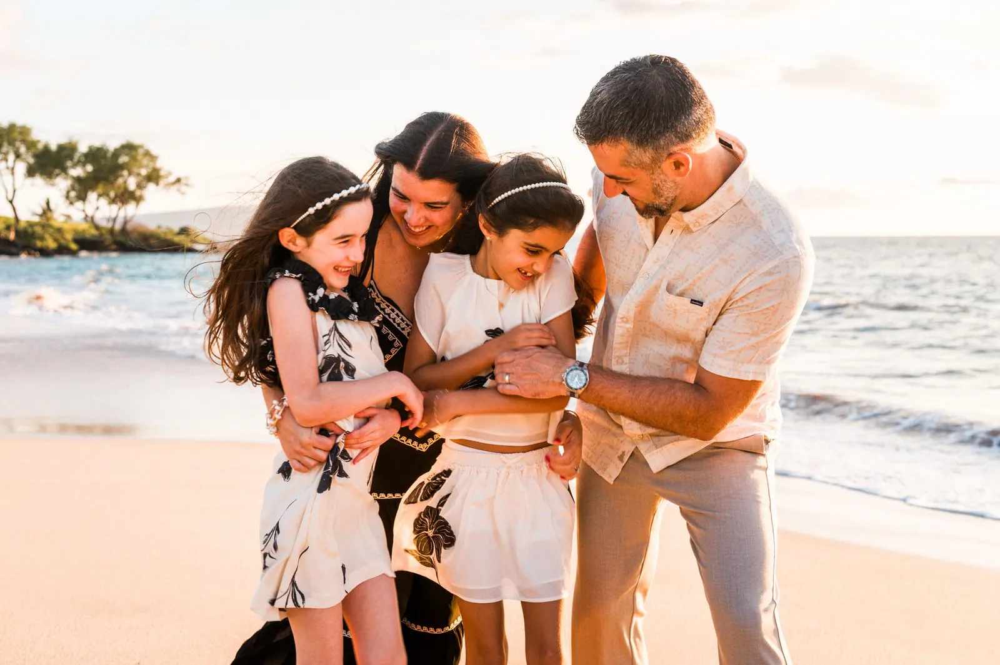
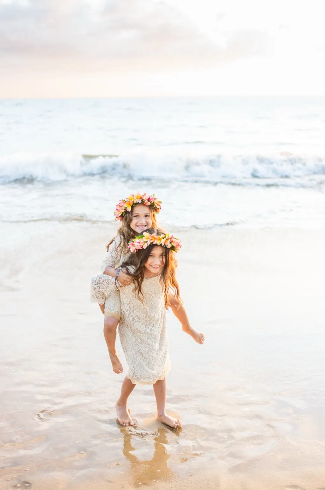
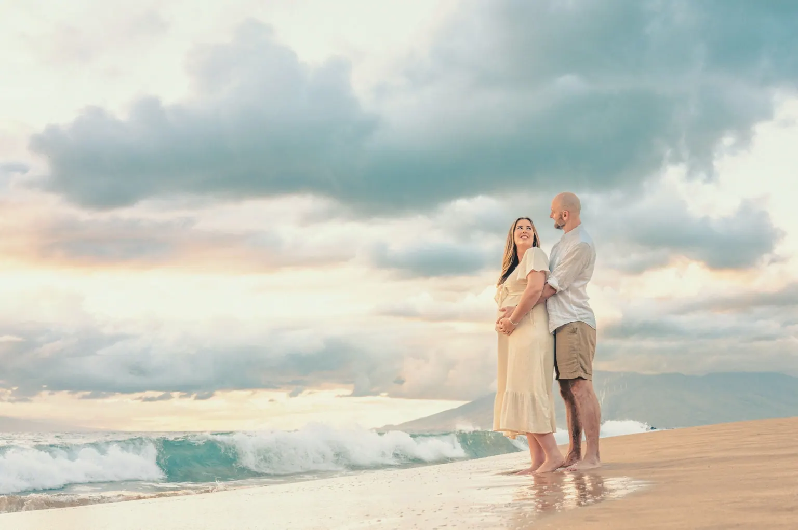
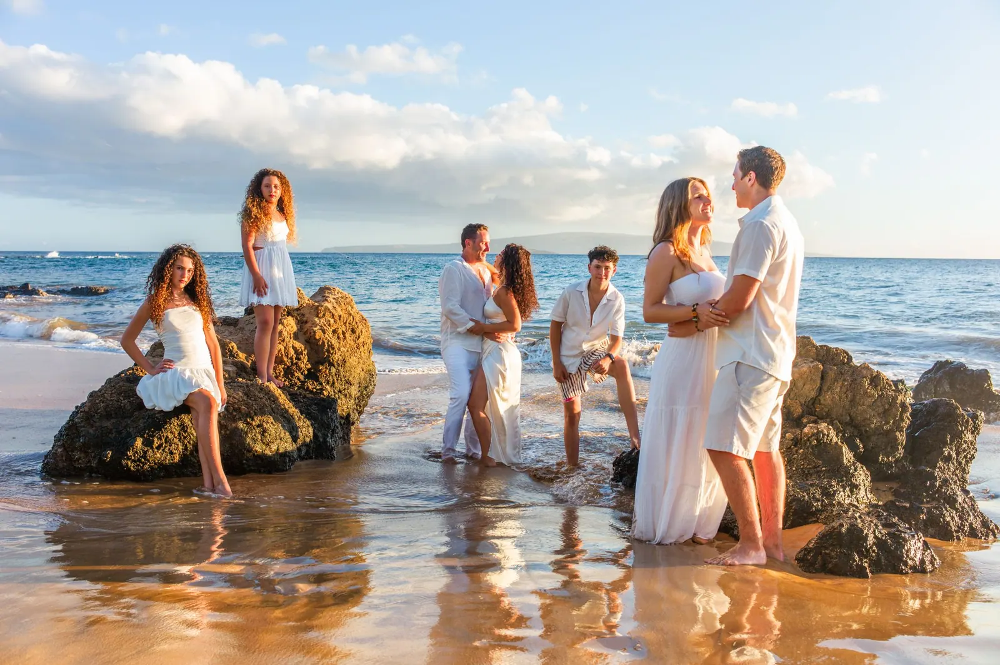
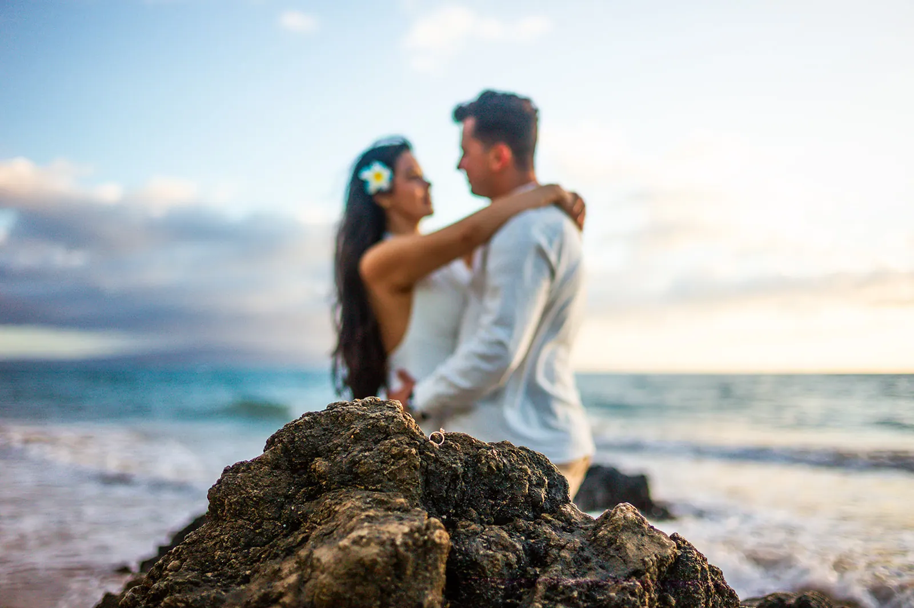
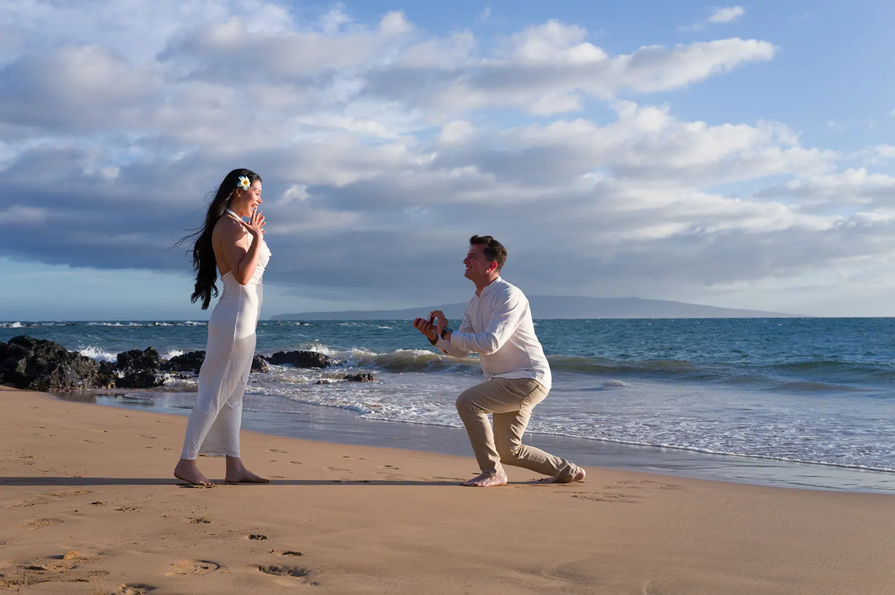
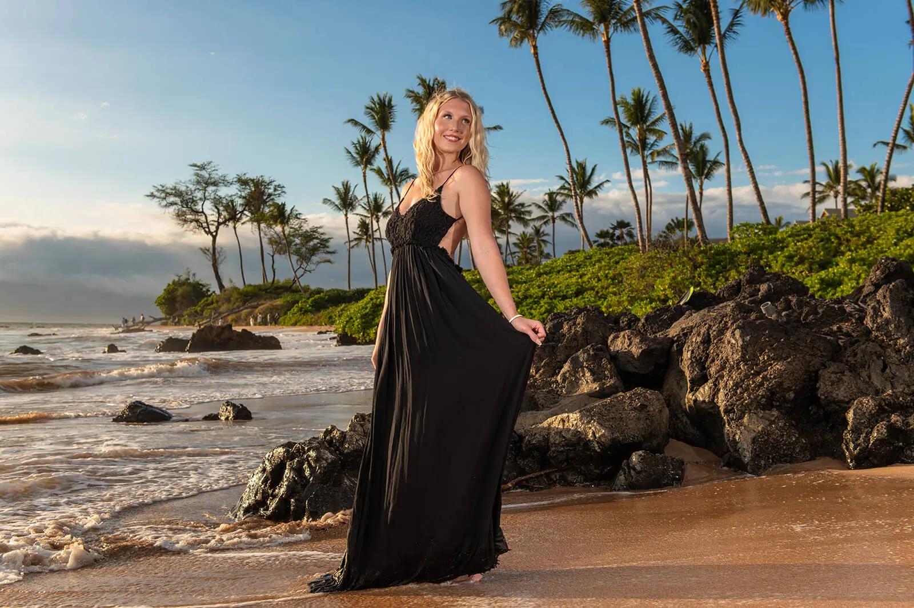
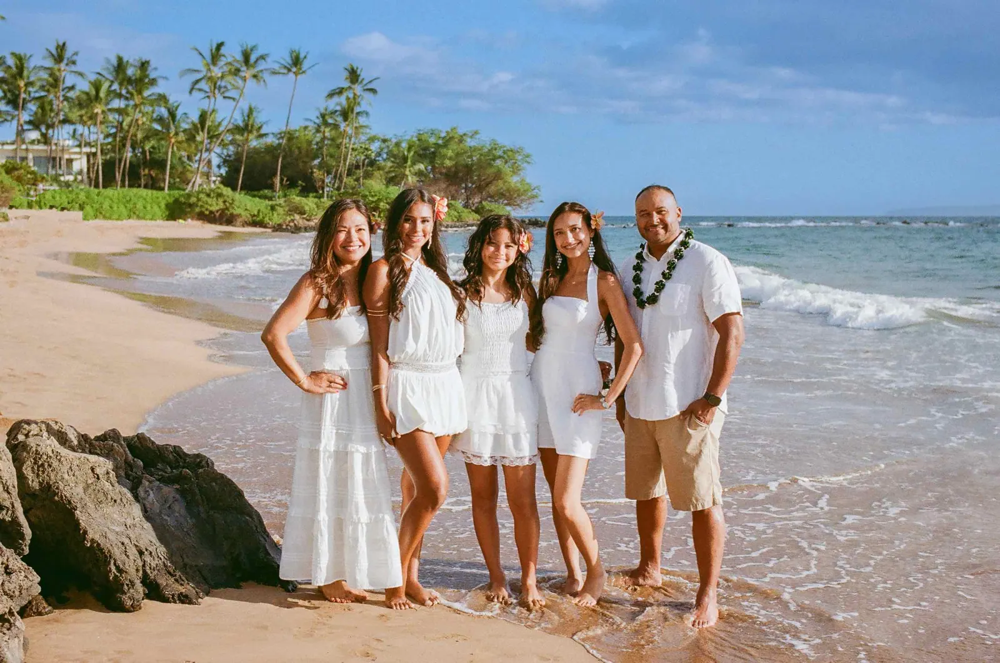
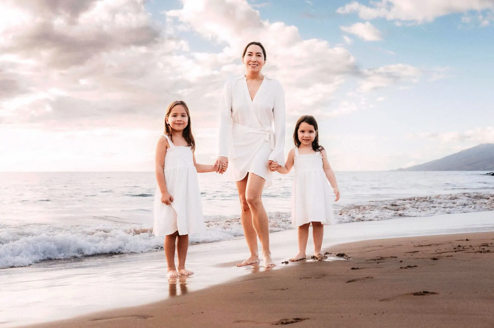
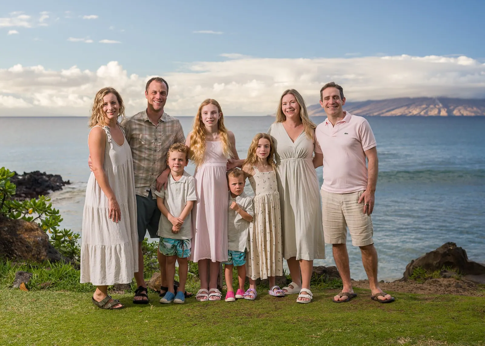
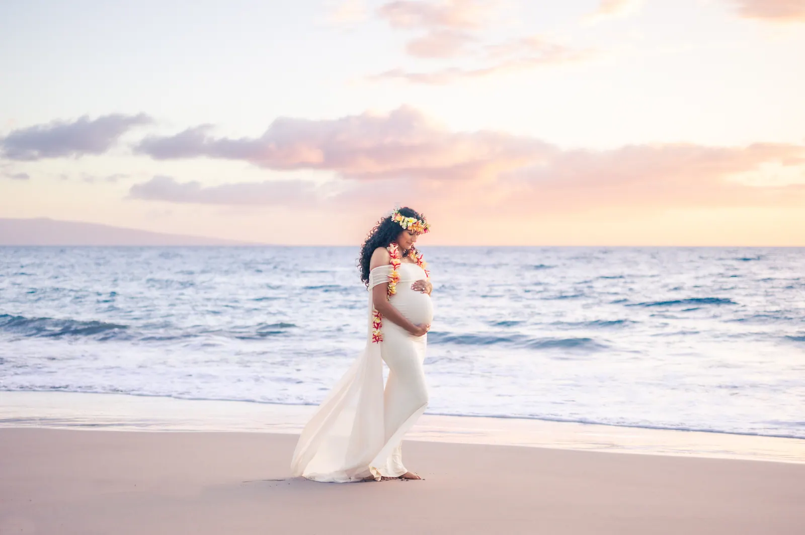
01 / 15
01Most popular
First Half of Sunset “Light & Bright”
From $399
Natural light and the true-to-life colors of Maui, all at the start of golden hour. Great for couples or families with children, and good for toddlers — vibrant, bright light before the early bedtime, helping avoid the meltdown risk. Available only in Wailea.
Special offer — extend your session to include the Last Half of Sunset. Ask about it when you book.